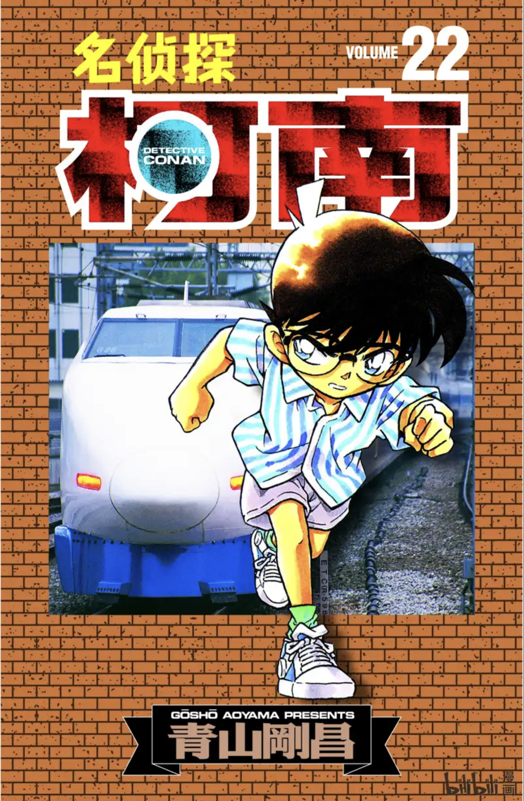
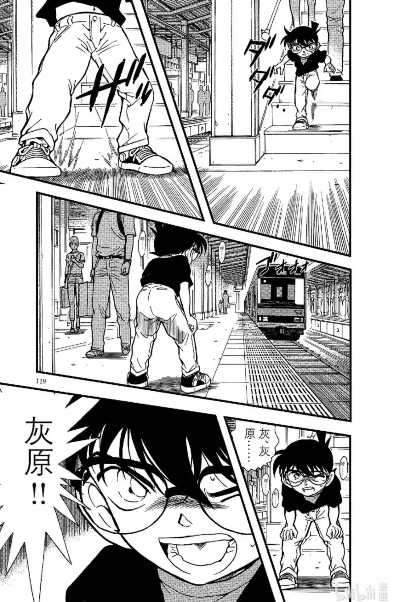

动森楼太高了，新开一贴发一些漫画里发现的有趣的地方和大家一起讨论。
1L 宣传一下原帖，内容比较多。给没读过的友友们写个目录。
https://tieba.baidu.com/p/8854901936
1. 柯哀双兔（22楼开始）
2. 杰克小润CP=美帝铲组（92楼开始）
3. 柠檬娜（猫）=小兰（115楼开始）
4. 金苹果与兰新志（115楼开始）
5. 伦敦篇金苹果的交接仪式，告白即是金苹果（130楼开始）
6. 小兰=撒旦（162楼开始）
7. 死罗神篇是堕天使的献祭仪式（164楼开始）
8. 新一与死罗神（186楼开始）
9. 新志=亚当夏娃（214楼开始）
10.新志出遇时新一左脸负伤（292楼开始）
11.新志=北斗星（330楼开始）
12.love is 0，0 is 北斗星（334楼）
13. 兰=猎户座，步美=小熊座a（336楼）
1L 宣传一下原帖，内容比较多。给没读过的友友们写个目录。
https://tieba.baidu.com/p/8854901936
1. 柯哀双兔（22楼开始）
2. 杰克小润CP=美帝铲组（92楼开始）
3. 柠檬娜（猫）=小兰（115楼开始）
4. 金苹果与兰新志（115楼开始）
5. 伦敦篇金苹果的交接仪式，告白即是金苹果（130楼开始）
6. 小兰=撒旦（162楼开始）
7. 死罗神篇是堕天使的献祭仪式（164楼开始）
8. 新一与死罗神（186楼开始）
9. 新志=亚当夏娃（214楼开始）
10.新志出遇时新一左脸负伤（292楼开始）
11.新志=北斗星（330楼开始）
12.love is 0，0 is 北斗星（334楼）
13. 兰=猎户座，步美=小熊座a（336楼）
前排围观
北斗星这个靠前的篇章并不简单，甚至很多画面有隐喻未来篇章情节的嫌疑。首先这个系列的描写手法是名柯整部作品里独一无二的，插入了上帝视角的旁白，而这个旁白竟是取自工藤优作的小说原稿。而整个案子也是在逐步还原那部小说，仿佛是一开始就有故事剧本，剧中人都像提线木偶般被作者写下的故事支配着。
先看下封面，是柯南追车。
这一篇的有希子，像是一个身上带有很多角色演绎的符号，她的一些画面有映射未来篇章一些经典情节的感觉。我隐约发现有希子戴着帽子出现的篇章都比较重要并且会送上一些启示。这就是艾琳送上的提示吧，和贝克街的亡灵一样，有种npc的感觉。
举几个例子：
这个浅香的手势。
先看下封面，是柯南追车。

关于新志=北斗星 已经在动森贴说过了，写一些新发现。这一篇的有希子，像是一个身上带有很多角色演绎的符号，她的一些画面有映射未来篇章一些经典情节的感觉。我隐约发现有希子戴着帽子出现的篇章都比较重要并且会送上一些启示。这就是艾琳送上的提示吧，和贝克街的亡灵一样，有种npc的感觉。
举几个例子：
这个浅香的手势。
以及对小兰的沉默注视，原篇感觉出现好几次。
在小兰前面吻了柯南。和世纪之吻构图一样。
2024-02-06 08:09 | 雁影◇妃:右脸一直被亲，留有伏笔受伤的左脸一直没被亲。（还左脸一片净土哈哈哈2024-02-06 08:23 | 雁影◇妃:回复 鄙人是▫ :噢 步美亲的是左脸 当我没说2024-02-06 19:59 | aizengin33:回复 雁影◇妃 :但是左脸受伤确实一直有，我觉得第四卷的时候青山还没想那么多

这一话的封面，又对应了柯志这个月下对视。
 是巧合还是老贼故意的？
是巧合还是老贼故意的？
2024-02-07 10:36 | 贴吧用户_7PX2yAy:我去 青山刚昌能不能给宫野志保换一身好看的衣服2024-02-14 13:14 | 贴吧用户_JQ66C9C:回复 贴吧用户_7PX2yAy :太好看的话大侦探就把持不住了


补充一下这一话又有经典的毛利兰开门情节。
2024-02-07 10:36 | 贴吧用户_7PX2yAy:呵呵(ꄱੈˍꄱੈ)
柯南月台追有希子，和柯哀的月台情节重合。



我越来越觉得结局反推真了
好在优作-大福尔摩斯上线保护了艾琳。
这边小福尔摩斯也在保护小艾琳。
所以浅香的独白到底是什么意思啊
最搞笑的是这里优作的话。故事里凶手模仿优作写了一半的小说作案，结果弄巧成拙。
好像青山刚昌在和动画组喊话：我才画了一半不到，你们就给我按头铁SR。那些都是我愚弄读者的圈套。
好像青山刚昌在和动画组喊话：我才画了一半不到，你们就给我按头铁SR。那些都是我愚弄读者的圈套。
2024-02-06 12:49 | 贴吧用户_GMSD67V:回复 highgg🐭 :青山可能用了个更极端的因为兰视角的回忆篇章里水族馆篇是最近的，记得最全。樱花班的回忆因为不知道真相实际上也不算完整。纽约篇更直接晕了，这一篇基本上不能算常规回忆，最多算有部分回忆性质的毛利兰的梦境（美好的回忆和不好的回忆的碰撞）
哇
还有这里利用艾琳找到凶手的情节，后面静电篇，柯南也是利用了哀找到了凶手。

2024-02-06 10:52 | 世界上没有真理:這邊小哀是不是也在演啊？小哀怎麼可能不知道甲殼蟲後面沒有鑰匙孔？還有靜電問題最好科學家不知道啦！我記得這篇有吧友分析小哀很早就知道犯案手法是靜電，所以才故意叫柯南幫她開門2024-02-11 08:13 | leo0810:回复 世界上没有真理 :只能这么理解了，超自然级别的柯学家不可能不知道这些小常识的
放一张静电篇的堕天使，被太阳烤焦翅膀的伊卡洛斯。


M27预告片的北斗駅
2024-03-16 10:41 | 游艺猎人😾:好哇，你柯还是件红色外套（某科学家最喜欢什么颜色来着？）2024-03-16 11:00 | 世界上没有真理:連西村警官都出場了m27真的很難不令人多想，尤其路標的意思頗耐人尋味2024-03-16 11:00 | 世界上没有真理:連西村警官都出場了m27真的很難不令人多想，尤其路標的意思頗耐人尋味